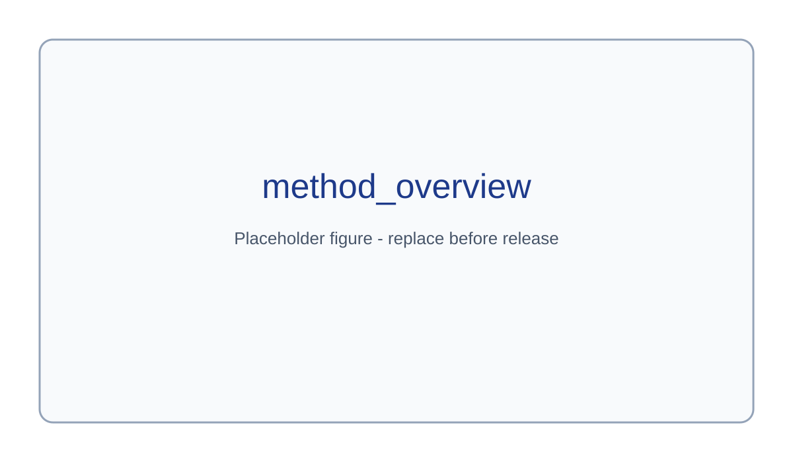

Abstract
We present a unified framework for spacecraft 6D pose estimation and synthetic-to-real adaptation. ConvMamSPN predicts keypoint heatmaps from spacecraft images using a ConvNeXt backbone and a Mamba-based hierarchical decoder, then recovers 6D pose with geometric PnP. UGGP-ST improves target-domain generalization by combining keypoint uncertainty estimation and geometric consistency for pseudo-label filtering, followed by teacher-student self-training.
Method Overview

4-Domain Visualization Carousel
Speed / Synthetic / Sunlamp / Lightbox run in parallel.